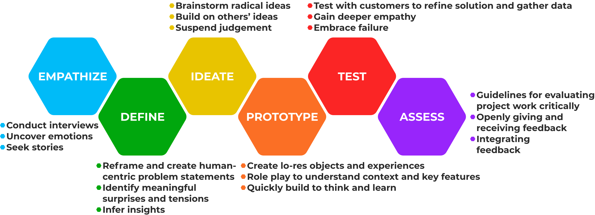

DSBN Website Redesign.
Overview
This is a website redesign for DSBN’s Sir Winston Churchill Secondary School. This website has not seen a significant update of the layout and usability since November 5, 2013.
This was created in order to accelerate the efficiency for the usability of the current website. The result is a streamlined digital content platform that can be used by teachers, students and parents. A redesign was necessary in order to facilitate a Super Menu System. This redesign is vital to an efficient website in regards to the usage, design layout and functionality in order to better equip users to navigate and utilize the website.
Role
User Experience & User Interface Designer
Project Proposal, User Research, Website Redesign, Creative Brief, Style Guide, Focus Group
June-July 2022
Background
The current website utilizes a challenging and exhaustive Super Menu System that presents users with seemingly endless dropdown menus and subpage options. The amount of dropdown options can be confusing to first-time users attempting to locate a specific page or content options. Identifying the initial usability issues was key to creating valuable user experience improvements.
Established in 1959, Sir Winston Churchill Secondary School is known for competitive sports, strong academics, arts, and an extensive list of extracurriculars. This secondary school is a branch of the DSBN(District School Board of Niagara).
A cluttered homepage discourages students and parents from navigating the website to find the important upcoming events and updates associated with this particular institution. Remodelling the website and providing a better user experience would result in additional traffic and use of the website.
Currently, the website is not being used to its full potential. Based on research, students and parents who have attended or are a part of this institution rarely use the website to find important and necessary information on student life.
The desired perception is to create a website where educators and administrative staff members can publish content with ease. This would accommodate students and parents in a manner that would make them more connected with the institution’s upcoming events and important information.
EMPATHIZE
The Challenge
The faculty has a hard time adding and updating content. This impacts parents and students using the website for up-to-date information. The sheer amount of options in the drop-down menus prevent parents that are not fully proficient or accustomed to technology from interacting and finding information with ease.
This creates a barrier between the information that parents and students of this particular institution are able to access in order to learn and understand the upcoming events offered by the institution.
DEFINE
The Design Process
The design process followed the Hasso Plattner Institute of Design, at Stanford University. This project involved an incredible amount of Target Market research and User Research in order to determine valid usability improvements. This descriptive and in-depth methodology was used to maintain core usability values, which ensures that the user experience would receive improvement.
IDEATE
Target Market Research
The findings concluded that the primary demographic was based on the average age and income of parents within Ontario.
The conclusion was the demographic included individuals ages 35-55 with an income ranging from $60-80,000, college and/or university educated and 65% being married.
The secondary demographic is composed of students ages 13-17 who are attending the institution.
User Personas
Based on the initial research, user personas were created with clear goals and characteristics represented with need statements to guide the design process and decisions.
Simplified:

User Flow
Determining the initial user flow of a primary user was vital to determining critical changes in order to improve the overall experience. One of the main issues solved with the user flow was how to minimalize options to simplify navigation for the end user.


PROTOTYPE
Low Fidelity Paper Prototype
Creating two initial low fidelity paper prototypes was vital to identifying the initial layout of the homepage as well as necessary changes and improvements.

High Fidelity Paper Prototype
After reviewing the low fidelity paper prototype, creating a high fidelity paper prototype was possible. This allows for further visualization of the potential final product.

Low Fidelity Digital Prototype
Using the initial research creating a low fIdelity digital prototype was crucial to gaining a better understanding of how users would interact with the website. These wireframes used both existing content structure as well as improved design techniques to present the most important information first.

High Fidelity Digital Prototype
Creating a high fidelity digital prototype in Adobe XD allowed the website to be presented as a functional prototype for user testing and overall functionality.
Mobile

Web

TEST
User Testing
Based on the positive feedback from user testing, minimal changes yet important ones were implemented.
Findings:
- Some buttons utilized rounded corners and others were squared which created a sense of inconsistency. This was fixed in the final interaction.
ASSESS
Results and Reflection
The user testing resulted in positive feedback on usability changes. This solidifies the importance of a website update for Sir Winston Churchill Secondary School. Undertaking this opportunity to prototype an update for the institution highlighted areas that are lacking in user efficiency and the process of creating a mock-up of necessary improvements validated the need to improve the platform.
Reflecting on the outcome of the prototype clearly draws a more efficient and modern layout of the institution’s website. It was exhilarating to create a website that not only makes it more eye-catching to navigate the web page but also combines modern techniques to captivate the users. I selected this institution and decided to update their website as in my youth I was a student of Sir Winston Churchill Secondary School.
As an alumni of the institution, I feel it is important to progress and make critical updates to the website to accommodate the students and parents who attend the institution. I believe that the updates are important as they would also help the current demographic of students and parents utilize the information that the institution has to offer, which plays a large part in making the students and parents feel a sense of community. It is important to update the website to allow the students to stay on track with their education deadlines and events, as well, as improvements would facilitate an improved sense of awareness for parents.
The results of the website redesign should be quantifiable by:
-Streamlining News and Information
-Keeping Students Engaged
-Providing Parents with all Necessary Information
-Increase User Engagement and Traffic